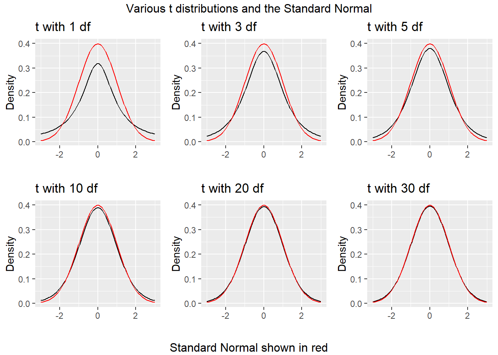

Chapter 17 Estimating a Population Mean
Suppose that we are interested in learning something about a population or process, from which we can obtain a sample that consists of a subset of potential results from that population or process. The main goal for many of the parametric models that are a large part of statistics is to estimate population parameters, like a population mean, or regression coefficient, on the basis of a sample. When we do this, we want to describe not only our best guess at the parameter – referred to as a point estimate, but also say something useful about the uncertainty in our estimate, to let us more completely assess what the data have to tell us. A key tool for doing this is a confidence interval, described here in some detail.
Essentially every textbook on introductory statistics describes the development of a confidence interval, at least for a mean. Good supplemental resources include Diez, Barr, and Çetinyaka-Rundel (n.d.), Bock, Velleman, and De Veaux (2004) and Pagano and Gauvreau (2000), for instance.
We’ll develop confidence intervals to compare parameters about two populations (either through matched pairs or independent samples) with confidence intervals soon. Here, we’ll consider the problem of estimating a confidence interval to describe the mean (or median) of the population represented by a single sample of quantitative data. Our main example uses data from the Serum Zinc study, as described in Chapter 16.
17.1 Defining a Confidence Interval
A confidence interval for a population or process mean uses data from a sample (and perhaps some additional information) to identify a range of potential values for the population mean, which, if certain assumptions hold, can be assumed to provide a reasonable estimate for the true population mean. A confidence interval consists of:
- An interval estimate describing the population parameter of interest (here the population mean), and
- A probability statement, expressed in terms of a confidence level.
17.2 Estimating the Population Mean from the Serum Zinc data
As an example, suppose that we are willing to assume that the mean serum zinc level across the entire population of teenage males, \(\mu\), follows a Normal distribution (and so, summarizing it with a mean is a rational thing to do.) Suppose that we are also willing to assume that the 462 teenage males contained in the serzinc tibble are a random sample from that complete population. While we know the mean of the sample of 462 boys, we don’t know \(\mu\), the mean across all teenage males. So we need to estimate it.
Earlier we estimated that a 90% confidence interval for the mean serum zinc level (\(\mu\)) across the entire population of teenage males was (86.71, 89.16) micrograms per deciliter. How should we interpret this result?
- Some people think this means that there is a 90% chance that the true mean of the population, \(\mu\), falls between 86.71 and 89.16 micrograms per deciliter. That’s not correct.
- The population mean is a constant parameter of the population of interest. That constant is not a random variable, and does not change. So the actual probability of the population mean falling inside that range is either 0 or 1.
- Our confidence is in our process.
- It’s in the sampling method (random sampling) used to generate the data, and in the assumption that the population follows a Normal distribution.
- It’s captured in our accounting for one particular type of error (called sampling error) in developing our interval estimate, while assuming all other potential sources of error are negligible.
So, what’s closer to the truth is:
- If we used this same method to sample data from the true population of teenage males, and built 100 such 90% confidence intervals, then about 90 of them would contain the true population mean.
17.3 Confidence vs. Significance Level
We’ve estimated a 90% confidence interval for the population mean serum zinc level among teenage boys using the serzinc data.
- We call 100(1-\(\alpha\))%, here, 90%, or 0.90, the confidence level, and
- \(\alpha\) = 10%, or 0.10 is called the significance level.
If we had instead built a series of 100 different 95% confidence intervals, then about 95 of them would contain the true value of \(\mu\).
Let’s look more closely at the issue of estimating a population mean based on a sample of observations. We will need three critical pieces - the sample, the confidence level, and the margin of error, which is based on the standard error of a sample mean, when we are estimating a population mean.
17.4 The Standard Error of a Sample Mean
The standard error, generally, is the name we give to the standard deviation associated with any particular parameter estimate.
If we are using a sample mean based on a sample of size \(n\) to estimate a population mean, the standard error of that sample mean is \(\sigma / \sqrt{n}\), where \(\sigma\) is the standard deviation of the measurements in the population.
We often estimate this particular standard error with its sample analogue, \(s / \sqrt{n}\), where \(s\) is the sample standard deviation.
- Other statistics have different standard errors.
- \(\sqrt{p (1-p) / n}\) is the standard error of the sample proportion \(p\) estimated using a sample of size \(n\).
- \(\sqrt{\frac{1-r^2}{n-2}}\) is the standard error of the sample Pearson correlation \(r\) estimated using \(n\) pairs of observations.
In developing a confidence interval for a population mean, we may be willing to assume that the data in our sample are drawn from a Normally distributed population. If so, the most common and useful means of building a confidence interval makes use of the t distribution (sometimes called Student’s t) and the notion of a standard error.
17.5 The t distribution and Confidence Intervals for \(\mu\)
In practical settings, we will use the t distribution to estimate a confidence interval from a population mean whenever we:
- are willing to assume that the sample is drawn at random from a population or process with a Normal distribution,
- are using our sample to estimate both the mean and standard deviation, and
- have a small sample size.
17.5.1 The Formula
We can build a 100(1-\(\alpha\))% confidence interval using the \(t\) distribution, using the sample mean \(\bar{x}\), the sample size \(n\), and the sample standard deviation \(s\).
The two-sided 100(1-\(\alpha\))% confidence interval (based on a \(t\) test) is:
\[\bar{x} \pm t_{\alpha/2, n-1}(s / \sqrt{n})\]
where \(t_{\alpha/2, n-1}\) is the value that cuts off the top \(\alpha/2\) percent of the \(t\) distribution, with \(n - 1\) degrees of freedom.
We obtain the relevant cutoff value in R by substituting in values for alphaover2 and n-1 into the following line of R code:
qt(alphaover2, df = n-1, lower.tail=FALSE)
17.5.2 Student’s t distribution
Student’s t distribution looks a lot like a Normal distribution, when the sample size is large. Unlike the normal distribution, which is specified by two parameters, the mean and the standard deviation, the t distribution is specified by one parameter, the degrees of freedom.
- t distributions with large numbers of degrees of freedom are more or less indistinguishable from the standard Normal distribution.
- t distributions with smaller degrees of freedom (say, with df < 30, in particular) are still symmetric, but are more outlier-prone than a Normal distribution

17.5.3 Building the CI “by hand” for the Serum Zinc data
In the serum zinc data, we observe the following results in our sample.
min Q1 median Q3 max mean sd n missing
50 76 86 98 153 87.9 16 462 0Suppose we wish to build a 90% confidence interval for the true mean serum zinc level across the entire population of teenage males. The confidence level will be 90%, or 0.90, and so the \(\alpha\) value, which is 1 - confidence = 0.10.
So what we know going in is that:
- We want \(\alpha\) = 0.10, because we’re creating a 90% confidence interval.
- The sample size n = 462 serum zinc measurements.
- The sample mean of those measurements, \(\bar{x}\) = 87.937 micrograms per deciliter.
- The sample standard deviation of those measurements, s = 16.005 micrograms per deciliter.
- As a result, our standard error of the sample mean is estimated well with \(s / \sqrt{n} = 16.005/\sqrt{462} = 0.745\).
So now, we are ready to calculate our 90% confidence interval.
The two-sided 100(1-\(\alpha\))% confidence interval (based on a \(t\) test) is: \(\bar{x} \pm t_{\alpha/2, n-1}(s / \sqrt{n})\), or
- The 90% CI for \(\mu\) is thus 87.937 \(\pm\) \(t_{0.10/2, 462-1}\) (0.745)
- To calculate the t cutoff value for \(\alpha\) = 0.10 and \(n\) = 462, we use
qt(0.10/2, df = 462-1, lower.tail=FALSE) = 1.648
- So the 90% CI for \(\mu\) is 87.937 \(\pm\) 1.648 x 0.745, or
- 87.937 \(\pm\) 1.228, or
- (86.71, 89.16)
So, our 90% confidence interval for the true population mean serum zinc level, based on our sample of 462 patients, is (86.71, 89.16) micrograms per deciliter.
17.5.4 Getting R to build a CI for the Serum Zinc data
Happily, R does all of this work, and with less inappropriate rounding, in the context of fitting an intercept-only linear regression model. An intercept-only model is fitted by putting the number 1 on the right hand side of our linear model. The resulting model simply fits the overall mean of the data as a prediction for all subjects.
Call:
lm(formula = zinc ~ 1, data = serzinc)
Residuals:
Min 1Q Median 3Q Max
-37.94 -11.94 -1.94 10.06 65.06
Coefficients:
Estimate Std. Error t value Pr(>|t|)
(Intercept) 87.937 0.745 118 <2e-16 ***
---
Signif. codes: 0 '***' 0.001 '**' 0.01 '*' 0.05 '.' 0.1 ' ' 1
Residual standard error: 16 on 461 degrees of freedom 5 % 95 %
(Intercept) 86.7 89.2Generally, though, I’ll use the tidy() function in broom to obtain the key information from a model like this:
# A tibble: 1 x 7
term estimate std.error statistic p.value conf.low conf.high
<chr> <dbl> <dbl> <dbl> <dbl> <dbl> <dbl>
1 (Intercept) 87.9 0.745 118. 0 86.7 89.2As an alternative, we could also use the t.test function, which can build (in this case) a two-sided confidence interval for the zinc levels like this:
One Sample t-test
data: serzinc$zinc
t = 118, df = 461, p-value <2e-16
alternative hypothesis: true mean is not equal to 0
90 percent confidence interval:
86.7 89.2
sample estimates:
mean of x
87.9 and the tidy() function from the broom package works here, too.
| estimate | statistic | p.value | parameter | conf.low | conf.high | method | alternative |
|---|---|---|---|---|---|---|---|
| 87.9 | 118 | 0 | 461 | 86.7 | 89.2 | One Sample t-test | two.sided |
And again, our 90% confidence interval for the true population mean serum zinc level, based on our sample of 462 patients, is (86.71, 89.16) micrograms per deciliter11.
17.5.5 Interpreting the Result
An appropriate interpretation of the 90% two-sided confidence interval above follows:
- (86.71, 89.16) micrograms per deciliter is a 90% two-sided confidence interval for the population mean serum zinc level among teenage males.
- Our point estimate for the true population mean serum zinc level is 87.94. The values in the interval (86.71, 89.16) represent a reasonable range of estimates for the true population mean serum zinc level, and we are 90% confident that this method of creating a confidence interval will produce a result containing the true population mean serum zinc level.
- Were we to draw 100 samples of size 462 from the population described by this sample, and use each such sample to produce a confidence interval in this manner, approximately 90 of those confidence intervals would cover the true population mean serum zinc level.
17.5.6 What if we want a 95% or 99% confidence interval instead?
We can obtain them using tidy and the same modeling approach.
# A tibble: 1 x 7
term estimate std.error statistic p.value conf.low conf.high
<chr> <dbl> <dbl> <dbl> <dbl> <dbl> <dbl>
1 (Intercept) 87.9 0.745 118. 0 86.5 89.4# A tibble: 1 x 7
term estimate std.error statistic p.value conf.low conf.high
<chr> <dbl> <dbl> <dbl> <dbl> <dbl> <dbl>
1 (Intercept) 87.9 0.745 118. 0 86.0 89.917.5.7 Using the broom package with the t test
The broom package takes the messy output of built-in functions in R, such as lm, t.test or wilcox.test, and turns them into tidy data frames. A detailed description of the package and three of its key functions is found at https://github.com/tidyverse/broom.
For example, we can use the tidy function within broom to create a single-row tibble of the key results from a t test.
# A tibble: 1 x 8
estimate statistic p.value parameter conf.low conf.high method
<dbl> <dbl> <dbl> <dbl> <dbl> <dbl> <chr>
1 87.9 118. 0 461 86.5 89.4 One S~
# ... with 1 more variable: alternative <chr>We can thus pull the endpoints of a 99% confidence interval directly from this output. broom also has a glance function, which returns the same information as tidy in the case of a t-test.
# A tibble: 1 x 8
estimate statistic p.value parameter conf.low conf.high method
<dbl> <dbl> <dbl> <dbl> <dbl> <dbl> <chr>
1 87.9 118. 1 461 -Inf 88.9 One S~
# ... with 1 more variable: alternative <chr>The t.test function in R also has an argument to specify the desired confidence level, for example:
One Sample t-test
data: serzinc$zinc
t = 118, df = 461, p-value <2e-16
alternative hypothesis: true mean is not equal to 0
95 percent confidence interval:
86.5 89.4
sample estimates:
mean of x
87.9 17.5.8 Effect of Changing the Confidence Level
Below, we see two-sided confidence intervals for various levels of \(\alpha\).
| Confidence Level | \(\alpha\) | Two-Sided Interval Estimate for Zinc Level Population Mean, \(\mu\) | Point Estimate of \(\mu\) |
|---|---|---|---|
| 80% or 0.80 | 0.20 | (87, 88.9) | 87.9 |
| 90% or 0.90 | 0.10 | (86.7, 89.2) | 87.9 |
| 95% or 0.95 | 0.05 | (86.5, 89.4) | 87.9 |
| 99% or 0.99 | 0.01 | (86, 89.9) | 87.9 |
What happens to the width of the confidence interval in this table as the confidence level changes?
17.5.9 One-sided vs. Two-sided Confidence Intervals
Occasionally, we want to estimate either an upper limit for the population mean \(\mu\), or a lower limit for \(\mu\), but not both.
If we, as before, have a sample of size n, with sample mean \(\bar{x}\) and sample standard deviation s, then:
The upper bound for a one-sided 100(1-\(\alpha\))% confidence interval for the population mean is \(\mu \leq \bar{x} + t_{\alpha, n-1}(\frac{s}{\sqrt{n}})\), with lower “bound” \(-\infty\).
The corresponding lower bound for a one-sided 100(1 - \(\alpha\)) CI for \(\mu\) would be \(\mu \geq \bar{x} - t_{\alpha, n-1}(\frac{s}{\sqrt{n}})\), with upper “bound” \(\infty\).
17.5.10 Calculating a one-sided confidence interval for the population mean
One Sample t-test
data: serzinc$zinc
t = 118, df = 461, p-value <2e-16
alternative hypothesis: true mean is greater than 0
90 percent confidence interval:
87 Inf
sample estimates:
mean of x
87.9
One Sample t-test
data: serzinc$zinc
t = 118, df = 461, p-value = 1
alternative hypothesis: true mean is less than 0
90 percent confidence interval:
-Inf 88.9
sample estimates:
mean of x
87.9 17.5.11 Relationship between One-Sided and Two-Sided CIs
Note the relationship between the two-sided 80% confidence interval, and the one-sided 90% confidence intervals.
| Confidence | \(\alpha\) | Type of Interval | Interval Estimate for Zinc Level Population Mean, \(\mu\) |
|---|---|---|---|
| 80% (.80) | 0.20 | Two-Sided | (86.98, 88.89) |
| 90% (.90) | 0.10 | One-Sided (Less Than) | \(\mu\) < 88.89. |
| 90% (.90) | 0.10 | One-Sided (Greater Than) | \(\mu\) > 86.98. |
Why does this happen? The 80% two-sided interval is placed so as to cut off the top 10% of the distribution with its upper bound, and the bottom 10% of the distribution with its lower bound. The 90% “less than” one-sided interval is placed so as to have its lower bound cut off the top 10% of the distribution.
The same issue appears when we consider two-sided 90% and one-sided 95% confidence intervals.
| Confidence | \(\alpha\) | Type of Interval | Interval Estimate for Zinc Level Population Mean, \(\mu\) |
|---|---|---|---|
| 90% (.90) | 0.10 | Two-Sided | (86.71, 89.16) |
| 95% (.95) | 0.05 | One-Sided (Less Than) | \(\mu\) < 89.16. |
| 95% (.95) | 0.05 | One-Sided (Greater Than) | \(\mu\) > 86.71. |
Again, the 90% two-sided interval cuts off the top 5% and bottom 5% of the distribution with its bounds. The 95% “less than” one-sided interval also has its lower bound cut off the top 5% of the distribution.
17.6 Bootstrap Confidence Intervals for \(\mu\)
17.6.1 What is a Bootstrap and Why Should I Care?
The bootstrap (and in particular, what’s known as bootstrap resampling) is a really good idea that you should know a little bit about. Good (2005) and Good and Hardin (2006) are excellent resources, for instance.
If we want to know how accurately a sample mean estimates the population mean, we would ideally like to take a very, very large sample, because if we did so, we could conclude with something that would eventually approach mathematical certainty that the sample mean would be very close to the population mean.
But we can rarely draw enormous samples. So what can we do?
17.6.2 Resampling is A Big Idea
One way to find out how precise our estimates are is to run them on multiple samples of the same size. This resampling approach was codified originally by Brad Efron in, for example, Efron (1979).
Oversimplifying a lot, the idea is that if we sample (with replacement) from our current sample, we can draw a new sample of the same size as our original.
- And if we repeat this many times, we can generate as many samples of, say, 462 zinc levels, as we like.
- Then we take these thousands of samples and calculate (for instance) the sample mean for each, and plot a histogram of those means.
- If we then cut off the top and bottom 5% of these sample means, we obtain a reasonable 90% confidence interval for the population mean.
17.6.3 When is a Bootstrap Confidence Interval for \(\mu\) Reasonable?
The interval will be reasonable as long as we’re willing to believe that:
- the original sample was a random sample (or at least a completely representative sample) from a population,
- and that the samples are independent of each other
- and that the samples are identically distributed (even though that distribution may not be Normal.)
A downside is that you and I will get (somewhat) different answers if we resample from the same data without setting the same random seed.
17.6.4 Bootstrap: Steps to estimate a confidence interval for \(\mu\)
To avoid the Normality assumption, and take advantage of modern computing power, we use R to obtain a bootstrap confidence interval for the population mean based on a sample.
What the computer does:
- Resample the data with replacement, until it obtains a new sample that is equal in size to the original data set.
- Calculates the statistic of interest (here, a sample mean.)
- Repeat the steps above many times (the default is 1,000 using our approach) to obtain a set of 1,000 sample means.
- Sort those 1,000 sample means in order, and estimate the 95% confidence interval for the population mean based on the middle 95% of the 1,000 bootstrap samples.
- Send us a result, containing the sample mean, and a 95% confidence interval for the population mean
17.6.5 Using R to estimate a 90% CI for \(\mu\) with the bootstrap
The command that we use to obtain a CI for \(\mu\) using the basic nonparametric bootstrap and without assuming a Normally distributed population, is smean.cl.boot, a part of the Hmisc package in R.
Mean Lower Upper
87.9 86.8 89.2 - Remember that the t-based 90% CI for \(\mu\) was (86.71, 89.16), according to the following output…
# A tibble: 1 x 7
term estimate std.error statistic p.value conf.low conf.high
<chr> <dbl> <dbl> <dbl> <dbl> <dbl> <dbl>
1 (Intercept) 87.9 0.745 118. 0 86.7 89.217.6.6 Comparing Bootstrap and T-Based Confidence Intervals
- The
smean.cl.bootfunction (unlike most R functions) deletes missing data automatically, as does thesmean.cl.normalfunction, which can also be used to produce the t-based confidence interval.
Mean Lower Upper
87.9 86.8 89.2 Mean Lower Upper
87.9 86.7 89.2 Bootstrap resampling confidence intervals do not follow the general confidence interval strategy using a point estimate \(\pm\) a margin for error.
- A bootstrap interval is often asymmetric, and while it will generally have the point estimate (the sample mean) near its center, for highly skewed data, this will not necessarily be the case.
- We will usually use either 1,000 (the default) or 10,000 bootstrap replications for building confidence intervals – practically, it makes little difference.
17.6.7 90% CI for \(\mu\) via bootstrap, changing minor details
Suppose we change the random seed that we set, or change the number (B) of desired bootstrap replications.
Mean Lower Upper
87.9 86.8 89.2 Mean Lower Upper
87.9 86.7 89.1 Mean Lower Upper
87.9 86.7 89.1 17.6.8 Bootstrap: Changing the Confidence Level
Mean Lower Upper
87.9 86.5 89.4 Mean Lower Upper
87.9 86.2 89.7 17.6.9 Bootstrap: Obtaining a One-sided Confidence Interval
If you want to estimate a one tailed confidence interval for the population mean using the bootstrap, then the procedure is as follows:
- Determine \(\alpha\), the significance level you want to use in your one-sided confidence interval. Remember that \(\alpha\) is 1 minus the confidence level. Let’s assume we want a 90% one-sided interval, so \(\alpha\) = 0.10.
- Double \(\alpha\) to determine the significance level we will use in the next step to fit a two-sided confidence interval.
- Fit a two-sided confidence interval with confidence level \(100(1 - 2*\alpha)\). Let the bounds of this interval be (a, b).
- The one-sided (greater than) confidence interval will have a as its lower bound.
- The one-sided (less than) confidence interval will have b as its upper bound.
Suppose that we want to find a 95% one-sided upper bound for the population mean serum zinc level among teenage males, \(\mu\), using the bootstrap.
Since we want a 95% confidence interval, we have \(\alpha\) = 0.05. We double that to get \(\alpha\) = 0.10, which implies we need to instead fit a two-sided 90% confidence interval.
Mean Lower Upper
87.9 86.7 89.1 The upper bound of this two-sided 90% CI will also be the upper bound for a 95% one-sided CI.
17.6.10 Bootstrap CI for the Population Median
If we are willing to do a small amount of programming work in R, we can obtain bootstrap confidence intervals for other population parameters besides the mean. One statistic of common interest is the median. How do we find a confidence interval for the population median using a bootstrap approach? The easiest way I know of makes use of the boot package, as follows.
In step 1, we specify a new function to capture the medians from our sample.
In step 2, we summon the boot package and call the boot.ci function:
BOOTSTRAP CONFIDENCE INTERVAL CALCULATIONS
Based on 1000 bootstrap replicates
CALL :
boot.ci(boot.out = boot(serzinc$zinc, f.median, 1000), conf = 0.9,
type = "basic")
Intervals :
Level Basic
90% (84, 87 )
Calculations and Intervals on Original ScaleThis yields a 90% confidence interval12 for the population median serum zinc level.
Recall that the sample median for the serum zinc levels in our sample of 462 teenage males was 86 micrograms per deciliter.
min Q1 median Q3 max mean sd n missing
50 76 86 98 153 87.9 16 462 017.6.11 Bootstrap CI for the IQR
If for some reason, we want to find a 95% confidence interval for the population value of the inter-quartile range via the bootstrap, we can do it.
[1] 22f.IQR <- function(y, id)
{ IQR (y[id]) }
set.seed(431207)
boot.ci(boot (serzinc$zinc, f.IQR, 1000),
conf=0.95, type="basic")BOOTSTRAP CONFIDENCE INTERVAL CALCULATIONS
Based on 1000 bootstrap replicates
CALL :
boot.ci(boot.out = boot(serzinc$zinc, f.IQR, 1000), conf = 0.95,
type = "basic")
Intervals :
Level Basic
95% (20.0, 24.2 )
Calculations and Intervals on Original Scale17.6.12 Bootstrap Resampling: Advantages and Caveats
The bootstrap may seem like the solution to all estimation problems. In theory, we could use the same approach to find a confidence interval for any other parameter – it’s not perfect, but it is very useful. Bootstrap procedures exist for virtually any statistical comparison - the t-test analog is just one of many possibilities, and bootstrap methods are rapidly gaining on more traditional approaches in the literature thanks mostly to faster computers.
The great advantage of the bootstrap is its relative simplicity, but don’t forget that many of the original assumptions of the t-based confidence interval still hold.
- Using a bootstrap does eliminate the need to worry about the Normality assumption in small sample size settings, but it still requires independent and identically distributed samples from the population of interest.
The bootstrap produces clean and robust inferences (such as confidence intervals) in many tricky situations. It is still possible that the results can be both:
- inaccurate (i.e. they can include the true value of the unknown population mean less often than the stated confidence probability) and
- imprecise (i.e., they can include more extraneous values of the unknown population mean than is desirable).
17.7 Large-Sample Normal Approximation CIs for \(\mu\)
If we were in the position of knowing the standard deviation of the population of interest precisely13, we could use that information to build a 100(1-\(\alpha\))% confidence interval using the Normal distribution, based on the sample mean \(\bar{x}\), the sample size \(n\), and the (known) population standard deviation \(\sigma\).
When we have a large sample size (often as little as 60 observations), we can use this approach to get a very close approximation to the result we would get using the t distribution, and there are many settings where obtaining the Z test result is more appropriate in estimating more complicated parameters than the population mean. When estimating a population mean in practice, though, I do not use this approach.
17.7.1 The Large Sample Formula for the CI around \(\mu\)
The two-sided 100(1-\(\alpha\))% confidence interval for a population mean \(\mu\) (based on the Normal distribution) is:
- The Lower Bound is \(\bar{x} - Z_{\alpha/2}(\sigma / \sqrt{n})\) and the Upper Bound is \(\bar{x} + Z_{\alpha/2}(\sigma / \sqrt{n})\)
where \(Z_{\alpha/2}\) is the value that cuts off the top \(\alpha/2\) percent of the standard Normal distribution (the Normal distribution with mean 0 and standard deviation 1).
17.7.2 Obtaining the \(Z_{\alpha/2}\) value using qnorm
We can obtain this cutoff value from R by substituting in the desired proportion for alphaover2 into the qnorm function as follows:
qnorm(alphaover2, lower.tail=FALSE)
For example, if we are building a 95% confidence interval, we have 100(1-\(\alpha\)) = 95, so that \(\alpha\) is 0.05, or 5%. This means that the cutoff value we need to find is \(Z_{0.05/2} = Z_{.025}\), and this turns out to be 1.96.
[1] 1.9617.7.3 Commonly Used Cutoffs based on the Normal Distribution
- If we’re building a two-sided 95% confidence interval, we’ll use \(Z_{.025}\) = 1.96
- For a two-sided 90% confidence interval, we use \(Z_{.05}\) = 1.645
- For a two-sided 99% confidence interval, we use \(Z_{.005}\) = 2.576
- For a two-sided 50% confidence interval, we use \(Z_{.25}\) = 0.67
- For a two-sided 68% confidence interval, we use \(Z_{.16}\) = 0.99
17.7.4 Lots of CIs use the Normal distribution
- The usual 95% confidence interval for large samples is an estimate \(\pm\) 2 standard errors14.
- Also, from the Normal distribution, an estimate \(\pm\) 1 standard error is a 68% confidence interval, and an estimate \(\pm\) 2/3 of a standard error is a 50% confidence interval.
- A 50% interval is particularly easy to interpret because the true value should be inside the interval about as often as it is not.
- A 95% interval is thus about three times as wide as a 50% interval.
- In general, the larger the confidence required, the wider the interval will need to be.
17.7.5 Large-Sample Confidence Interval for Zinc Levels
Since we have a fairly large sample (n = 462) in the serzinc data, we could consider using a large-sample approach (assuming the sample standard deviation is equal to the population standard deviation, and then using the Normal distribution) to estimate a confidence interval for the mean zinc levels in the population of all 15-17 year old males like those in our sample.
In the zinc levels within the serzinc data, we have
- a sample of \(n\) = 462 observations
- with sample mean \(\bar{x}\) = 87.94 and standard deviation \(s\) = 16
- and suppose we want to, at first, find a 95% confidence interval, so \(\alpha\) = 0.05
The 95% confidence interval is calculated as \(\bar{x} \pm Z_{\alpha/2}(\sigma / \sqrt{n})\), and here we will assume that \(s = \sigma\) which may be reasonable with a fairly large sample size:
87.94 \(\pm\) (1.96)(16 / \(\sqrt{462}\)) = 87.94 \(\pm\) 1.46, or (86.48, 89.4)
Our 95% confidence interval for the population mean is (86.48, 89.4) \(\mu\)g/dl. Were we to generate 100 such intervals, approximately 95 of those intervals would be expected to include the true mean of the entire population of 15-17 year old males like those in our sample.
17.7.6 Comparing Z and t-based Intervals for Serum Zinc
For the serum zinc data, we had \(n = 462\) observations in our sample.
Do the z-based and t-based confidence intervals differ much?
| \(\alpha\) | Confidence Level | Confidence Interval | Method |
|---|---|---|---|
| 0.05 | 95% | (86.48, 89.40) | Z (known \(\sigma\); large \(n\)) |
| 0.05 | 95% | (86.47, 89.40) | t (\(\sigma\) unknown) |
| 0.10 | 90% | (86.72, 89.16) | Z (known \(\sigma\); large \(n\)) |
| 0.10 | 90% | (86.71, 89.16) | t (\(\sigma\) unknown) |
17.7.7 One-Sided Confidence Intervals in Large Samples
The upper bound for a one-sided 100(1-\(\alpha\))% confidence interval for the population mean is:
\(\mu \leq \bar{x} + Z_{\alpha}(\frac{\sigma}{\sqrt{n}})\), with lower “bound” \(-\infty\).
The corresponding lower bound for a one-sided 100(1 - \(\alpha\)) CI for \(\mu\) would be:
\(\mu \geq \bar{x} - Z_{\alpha}(\frac{\sigma}{\sqrt{n}})\), with upper “bound” \(\infty\).
17.8 Wilcoxon Signed Rank Procedure for CIs
17.8.1 Confidence Intervals for the Median of a Population
It turns out to be difficult, without the bootstrap, to estimate an appropriate confidence interval for the median of a population, which might be an appealing thing to do, particularly if the sample data are clearly not Normally distributed, so that a median seems like a better summary of the center of the data. Bootstrap procedures are available to perform the task.
The Wilcoxon signed rank approach can be used as an alternative to t-based procedures to build interval estimates for the population pseudo-median when the population cannot be assumed to follow a Normal distribution.
As it turns out, if you’re willing to assume the population is symmetric (but not necessarily Normally distributed) then the pseudo-median is actually equal to the population median.
17.8.2 What is a Pseudo-Median?
The pseudo-median of a particular distribution G is the median of the distribution of (u + v)/2, where both u and v have the same distribution (G).
- If the distribution G is symmetric, then the pseudomedian is equal to the median.
- If the distribution is skewed, then the pseudomedian is not the same as the median.
- For any sample, the pseudomedian is defined as the median of all of the midpoints of pairs of observations in the sample.
17.8.3 Getting the Wilcoxon Signed Rank-based CI in R
Wilcoxon signed rank test with continuity correction
data: zinc
V = 1e+05, p-value <2e-16
alternative hypothesis: true location is not equal to 0
95 percent confidence interval:
86.0 88.5
sample estimates:
(pseudo)median
87.5 17.8.4 Interpreting the Wilcoxon CI for the Population Median
If we’re willing to believe the zinc levels come from a population with a symmetric distribution, the 95% Confidence Interval for the population median would be (86, 88.5)
For a non-symmetric population, this only applies to the pseudo-median.
Note that the pseudo-median (87.5) is actually closer here to the sample mean (86) than it is to the sample median (87.9).
17.8.5 Using the broom package with the Wilcoxon test
We can also use the tidy function within broom to create a single-row tibble of the key results from a Wilcoxon test, so long as we run wilcox.test specifying that we want a confidence interval.
# A tibble: 1 x 7
estimate statistic p.value conf.low conf.high method alternative
<dbl> <dbl> <dbl> <dbl> <dbl> <chr> <chr>
1 87.5 106953 2.00e-77 86.0 88.5 Wilcoxon sign~ two.sided 17.9 General Advice
We have described four different approaches to estimating a confidence interval for the center of a distribution of quantitative data.
- The most commonly used approach uses the t distribution to estimate a confidence interval for a population/process mean. This requires some extra assumptions, most particularly that the underlying distribution of the population values is at least approximately Normally distributed. This is identical to the result we get from an intercept-only linear regression model.
- A more modern and very general approach uses the idea of the bootstrap to estimate a confidence for a population/process parameter, which could be a mean, median or other summary statistic. The bootstrap, and the underlying notion of resampling is an important idea that lets us avoid some of the assumptions (in particular Normality) that are required by other methods. Bootstrap confidence intervals involve random sampling, so that the actual values obtained will differ a bit across replications.
- A third approach makes more substantial assumptions - it uses the Normal distribution rather than a t, and assumes (among other things) very large samples. For estimating a single mean, we’ll never do this, but for estimating more complex parameters, particularly in Part C when discussing modeling, we will occasionally use this approach.
- Finally, the Wilcoxon signed-rank method is one of a number of inferential tools which transform the data to their ranks before estimating a confidence interval. This avoids some assumptions, but yields inferences about a less-familiar parameter - the pseudo-median.
Most of the time, the bootstrap provides a reasonably adequate confidence interval estimate of the population value of a parameter (mean or median, most commonly) from a distribution when our data consists of a single sample of quantitative information.
References
Bock, David E., Paul F. Velleman, and Richard D. De Veaux. 2004. Stats: Modelling the World. Boston MA: Pearson Addison-Wesley.
Diez, David M., Christopher D. Barr, and Mine Çetinyaka-Rundel. n.d. OpenIntro Statistics. Third. https://www.openintro.org/stat/textbook.php?stat_book=os.
Efron, Bradley. 1979. “Bootstrap Methods: Another Look at the Jackknife.” Annals of Statistics 7(1): 1–26. https://projecteuclid.org/euclid.aos/1176344552.
Good, Phillip I. 2005. Introduction to Statistics Through Resampling Methods and R/S-Plus. Hoboken, NJ: Wiley.
Good, Phillip I., and James W. Hardin. 2006. Common Errors in Statistics (and How to Avoid Them). Second. Hoboken, NJ: Wiley.
Pagano, Marcello, and Kimberlee Gauvreau. 2000. Principles of Biostatistics. Second. Duxbury Press.
Since the measured zinc levels appear as integers, we should probably be rounding even further in our confidence interval, down to perhaps one decimal place.↩
Actually, the boot.ci function can provide up to five different types of confidence interval (see the help file) if we change to type=“all”, and some of those other versions have attractive properties. However, we’ll stick with the basic approach in 431.↩
Practical applications usually demand a subtler approach, but this normal distribution-based approach can help us fix some key ideas↩
The use of 2 standard errors for a confidence interval for a population mean is certainly reasonable whenever n is 60 or more. This is because the t distribution with 59 degrees of freedom has a 0.025 cutoff of 2.0, anyway.↩